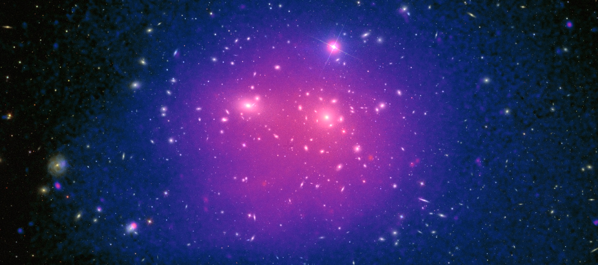

This page is under construction
Research
Galaxy Clusters
Galaxy clusters are the largest gravitationally bound structures in the universe. They are composed of hundreds to thousands of galaxies, hot gas, and dark matter. My research involves the statistical analysis of galaxy clusters using optical and X-ray detection methods.
